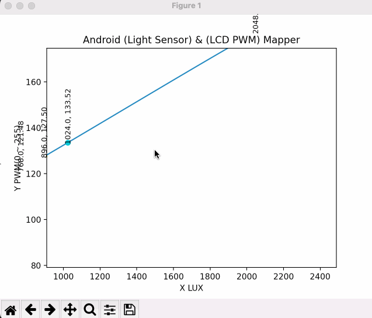

在图形界面上直接使用鼠标滚轮缩放、左键移动，更方便查看数据
https://gist.github.com/t20100/e5a9ba1196101e618883
https://github.com/PeterJust/panzoom
0006_MatplotlibZoom.py
独立的文件便于代码复用
0006_MatplotlibZoomExample.py
调用MatplotlibZoom.py的示例
